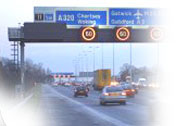
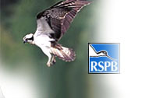
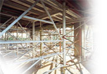
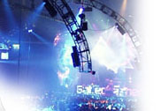

Engineering.
Built to deliver.
Retail rollouts, electrical installations, shopfitting, CCTV and specialist project support — shown through the work itself.
The work is the navigation.
No stock photography. These panels use the project images you supplied, with teal overlays and white typography doing the branding.

Shopfitting & Retail
Gondolas, racking, corrals, sales floors and large-scale store programmes.

Commercial & Retail
Installations, distribution, lighting and site systems.

Process, Pumping & Controls
Pump repairs, MCC upgrades, telemetry, process repairs, NRVs, tank cleaning and site electrical works.

CCTV Systems
Commercial and industrial surveillance.

Digital Signage
Display installation and rollout support.

Projects in Detail
Browse genuine project photography from the supplied archive.


One delivery network. Five focused brands.
JusWrk is the umbrella: connecting capable people, controlled delivery and specialist protection without losing the history behind the work.
People & Capability
Profiles, CVs, qualifications and verified experience.
Explore M-Hub → MH-ControlProject Control
Surveys, records, dashboards and engineering workflows.
Explore MH-Control → SiteGuardCustom Security Systems
Permanent CCTV, communications, edge AI and site protection designed around the risk.
Explore SiteGuard → SentinelTemporary Hire
Rapid-deployment protection, mobile towers and managed temporary security.
Explore Sentinel → Image SystemsEngineering Heritage
The restored project archive behind SiteGuard, from highways to wildlife monitoring.
Explore the archive →Past experience. New purpose.
Marc's original Image Systems work is now a living project archive—showing the experience behind today's SiteGuard and Sentinel systems.

Five motorway reports
Dedicated roadside case studies from the original project record.
Read the reports →
The Osprey project
Nest protection, remote observation and the historic return at Bassenthwaite.
Read the case study →
The SiteGuard origin
How temporary and permanent site protection grew from real installation work.
Explore the story →
More sectors and systems
Casinos, events, rail, schools and other specialist installations.
Browse the archive →